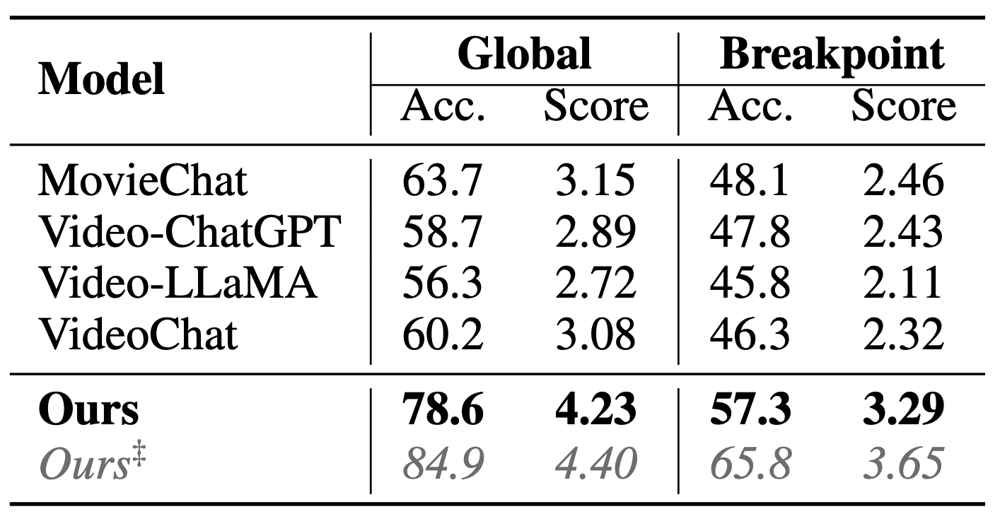
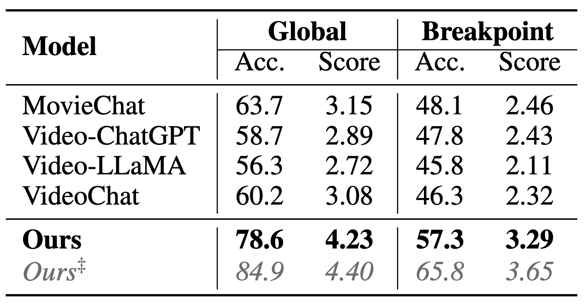
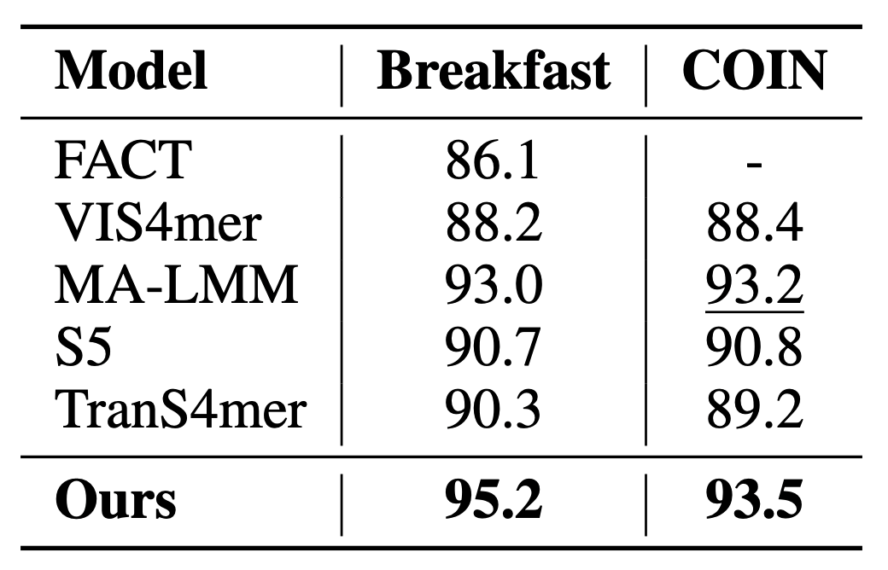

Long Movie (MovieChat)
HERMES Achieves SOTA results on MovieChat, surpassing the its closest competitor by a staggering 14.9%. The result marked with &Dagger in fully-supervised.
While existing research often treats long-form videos as extended short videos, we propose a novel approach that more accurately reflects human cognition.
This paper introduces HERMES: temporal-coHERent long-forM understanding with Episodes and Semantics, a model that simulates episodic memory accumulation to capture action sequences and reinforces them with semantic knowledge dispersed throughout the video. Our work makes two key contributions: First, we develop an Episodic COmpressor (ECO) module that efficiently aggregates crucial representations from micro to semi-macro levels. Second, we propose a Semantics reTRiever (SeTR) that enhances these aggregated representations with semantic information by focusing on the broader context, dramatically reducing feature dimensionality while preserving relevant macro-level information. Extensive experiments demonstrate that HERMES achieves state-of-the-art performance across multiple long-video understanding benchmarks in both zero-shot and fully-supervised settings.
HERMES Achieves SOTA results on MovieChat, surpassing the its closest competitor by a staggering 14.9%. The result marked with &Dagger in fully-supervised.
HERMES Achieves SOTA results on Breakfast and COIN, two long-form procedural videos.
HERMES Achieves a far greater top-1 accuracy than the closest method on the challenging LVU dataset.
HERMES excels at fine-grained understanding of arbitrarily long videos. Furthermore, it has the rare quality of knowing when it doesn't know.
HERMES can identify animal species, accurately count them. It can also determine peoples' relationships by watching them interact across thousands of frames.